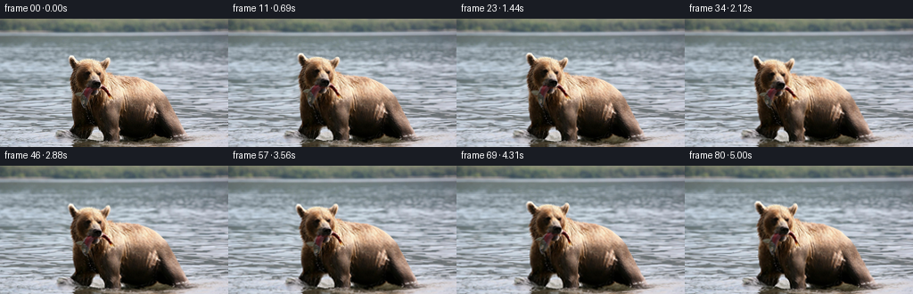
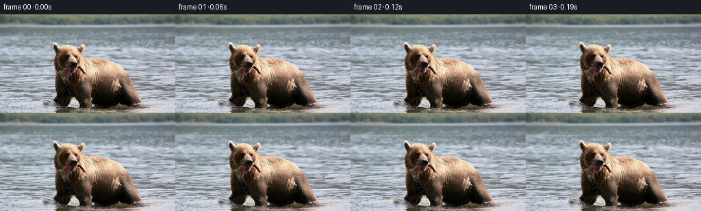

候选 01 · 2026-11-08T17:31:44.907832+00:00 · 点开播放与检查图
inspection.png

transition_check.png

代码变化
--- 上一保存版本
+++ 本次保存版本
@@ -0,0 +1,143 @@
+"""Deterministic, image-based animation of the supplied wildlife photograph.
+Only hand-authored geometry and analytic motion are used.
+"""
+from pathlib import Path
+import json
+import numpy as np
+from PIL import Image, ImageDraw
+import cv2
+from scipy.ndimage import gaussian_filter
+import artifact_io
+
+ROOT = Path(__file__).resolve().parent
+
+def region(points, feather=0.0):
+ # Antialiased coverage from geometric boundaries, not external assets.
+ scale = 4
+ canvas = Image.new('L', (256*scale, 144*scale), 0)
+ ImageDraw.Draw(canvas).polygon([(int(x*scale), int(y*scale)) for x,y in points], fill=255)
+ a = np.asarray(canvas.resize((256,144), Image.Resampling.LANCZOS), dtype=np.float32)/255
+ if feather:
+ a = gaussian_filter(a, feather)
+ return np.clip(a,0,1)
+
+
+def make_frames():
+ spec = json.loads((ROOT/'task_spec.json').read_text())
+ source = np.asarray(Image.open(ROOT/'first_frame.png').convert('RGB'))
+ H,W = source.shape[:2]
+ y,x = np.mgrid[:H,:W].astype(np.float32)
+ # Anatomy and the water/shore boundary are traced in the reference plane.
+ outline = [(78,41),(82,41),(87,47),(98,44),(110,46),(119,44),(122,43),
+ (124,47),(122,56),(119,61),(130,63),(147,65),(160,68),
+ (174,76),(185,86),(193,99),(204,121),(209,130),
+ (207,135),(193,137),(185,133),(175,128),(169,131),
+ (155,135),(141,135),(135,132),(135,138),(116,139),
+ (115,133),(112,126),(109,121),(102,122),(101,130),
+ (97,136),(89,135),(83,131),(78,126),(82,121),
+ (81,109),(80,94),(78,79),(78,65),(81,56),(79,49)]
+ bear = region(outline,2.0)
+ head = region([(74,36),(128,37),(129,62),(126,78),(118,91),
+ (108,100),(90,99),(77,85)],5.0)
+ fish = region([(96,78),(104,75),(108,77),(100,86),(97,99),
+ (93,101),(89,96),(87,89),(84,88),(87,83)],1.6)
+ tail = region([(112,75),(117,75),(121,79),(126,86),(124,89),
+ (120,86),(116,80),(112,78)],1.0)
+ frontleg = region([(112,92),(130,92),(137,106),(137,143),
+ (115,143),(113,128),(110,116)],5.0)
+ farleg = region([(81,95),(101,95),(108,113),(100,138),
+ (84,138),(78,126)],4.0)
+ hindleg = region([(173,97),(190,93),(214,133),(206,141),
+ (185,139),(173,126)],5.0)
+ depth = np.clip((y-18)/120,0,1)
+ wet = np.clip((y-20)/13,0,1)*(1-bear)
+ # Smooth release of the local surface movement at the shore.
+ frames = [source.copy()]
+
+ def sample(a, xx, yy):
+ return cv2.remap(a, xx.astype(np.float32), yy.astype(np.float32),
+ cv2.INTER_LINEAR, borderMode=cv2.BORDER_REFLECT_101)
+
+ def displacement(t):
+ # The bear retains its catch; relaxed breathing and small weight shifts.
+ fade = 1-np.exp(-t*2.3)
+ pace = 2*np.pi*t/3.1
+ bx = 2.8*(1-np.exp(-t/2.7)) + 0.65*np.sin(pace)*fade
+ by = -0.60*np.sin(pace)*fade
+ bodydx = bx + (x-142)*0.008*np.sin(2*np.pi*t/2.65)*fade
+ bodydy = by + 0.30*np.sin(pace)*(y-92)/50*fade
+ dx = bear*bodydx
+ dy = bear*bodydy
+
+ # Neck bends gently: lift, look aside, then return toward the viewer.
+ # Slow motion is combined with small jaw-related nods.
+ angle = np.deg2rad(4.2*np.sin(2*np.pi*t/4.8) +
+ 1.1*np.sin(2*np.pi*t/1.3)*fade)
+ hx = -2.5*np.sin(2*np.pi*t/5.7)*fade
+ hy = -1.45*np.sin(2*np.pi*t/3.7)*fade
+ rx,ry = x-113,y-88
+ rdx = (np.cos(angle)-1)*rx-np.sin(angle)*ry+hx
+ rdy = np.sin(angle)*rx+(np.cos(angle)-1)*ry+hy
+ dx += head*rdx
+ dy += head*rdy
+
+ # The exposed fish hangs from the jaw, with a little inertial swing.
+ swing = np.deg2rad(7.5*np.sin(2*np.pi*t/1.95)*fade)
+ fx,fy = x-103,y-77
+ dx += fish*((np.cos(swing)-1)*fx-np.sin(swing)*fy)
+ dy += fish*(np.sin(swing)*fx+(np.cos(swing)-1)*fy)
+ dx += tail*(0.45*np.sin(2*np.pi*t/1.4)*fade)
+ dy += tail*(0.5*np.sin(2*np.pi*t/1.4)*fade)
+
+ # Forelegs alternately flex without disconnecting them from the torso.
+ dx += frontleg*0.95*np.sin(pace)*fade
+ dy += frontleg*(-1.05*np.maximum(np.sin(pace),0))*fade
+ dx += farleg*(-1.25*np.sin(pace))*fade
+ dy += farleg*(-0.65*np.maximum(-np.sin(pace),0))*fade
+ dx += hindleg*(-0.38*np.sin(pace))*fade
+ dy += hindleg*(0.25*np.sin(pace))*fade
+
+ # Advect the photographed water; several scales of wave interference.
+ phase1 = .15*x+.64*y
+ phase2 = .067*x-.39*y
+ wx = depth*(0.65*t + .48*(np.sin(phase1-1.8*t)-np.sin(phase1))
+ +.26*(np.sin(phase2+1.1*t)-np.sin(phase2)))
+ wy = depth*(.43*(np.sin(.075*x+.49*y-2.4*t)-np.sin(.075*x+.49*y))
+ +.22*(np.sin(.20*x-.31*y+1.65*t)-np.sin(.20*x-.31*y)))
+ # Ripples spread out from the submerged paws, deforming existing reflections.
+ for cx,cy,offset in [(122,138,0),(90,135,1.0),(197,134,2.1)]:
+ xx=x-cx; yy=(y-cy)*3.4
+ r=np.sqrt(xx*xx+yy*yy+.01)
+ env=np.exp(-r/20)*np.clip((y-112)/12,0,1)
+ wave=(np.sin(r*.60-t*4.2+offset)-np.sin(r*.60+offset))
+ wx += .17*env*wave*xx/(r+1)
+ wy += .30*env*wave
+ dx += wet*wx
+ dy += wet*wy
+ return dx.astype(np.float32),dy.astype(np.float32)
+
+ for i in range(1,spec['frames']):
+ t=i/spec['fps']
+ dx,dy = displacement(t)
+ # Numerically invert the forward map; avoids doubled edges during a nod.
+ sx=x-dx; sy=y-dy
+ for _ in range(5):
+ sx=x-sample(dx,sx,sy)
+ sy=y-sample(dy,sx,sy)
+ frame=cv2.remap(source,sx,sy,cv2.INTER_CUBIC,borderMode=cv2.BORDER_REFLECT_101).astype(np.float32)
+ water_here=sample(wet,sx,sy)
+ # Faint, broad caustic highlights, never over the bear or far shoreline.
+ phase=.125*x+.80*y
+ shimmer=(np.sin(phase-2.1*t)-np.sin(phase))*0.52*depth*water_here
+ frame += shimmer[:,:,None]*np.array([.82,.96,1.0],np.float32)
+ # Small real-camera push in. The anchor stays on the animal, not the frame corner.
+ zoom=1+.016*(t/(spec['frames']/spec['fps']))
+ frame=cv2.remap(frame,(x-130)/zoom+130,(y-88)/zoom+88,
+ cv2.INTER_CUBIC,borderMode=cv2.BORDER_REFLECT_101)
+ frames.append(np.clip(np.rint(frame),0,255).astype(np.uint8))
+ return np.stack(frames)
+
+if __name__ == '__main__':
+ frames=make_frames()
+ artifact_io.save(frames,ROOT)
+ print('Saved',frames.shape,frames.dtype,'to',ROOT/'pixels.npz')
命令 5 · 2026-11-08T17:31:42.274716+00:00/bin/bash -lc "cat > generate.py <<'PY'
\"\"\"Deterministic, image-based animation of the supplied wildlife photograph.
Only hand-authored geometry and analytic motion are used.
\"\"\"
from pathlib import Path
import json
import numpy as np
from PIL import Image, ImageDraw
import cv2
from scipy.ndimage import gaussian_filter
import artifact_io
ROOT = Path(__file__).resolve().parent
def region(points, feather=0.0):
# Antialiased coverage from geometric boundaries, not external assets.
scale = 4
canvas = Image.new('L', (256*scale, 144*scale), 0)
ImageDraw.Draw(canvas).polygon([(int(x*scale), int(y*scale)) for x,y in points], fill=255)
a = np.asarray(canvas.resize((256,144), Image.Resampling.LANCZOS), dtype=np.float32)/255
if feather:
a = gaussian_filter(a, feather)
return np.clip(a,0,1)
def make_frames():
spec = json.loads((ROOT/'task_spec.json').read_text())
source = np.asarray(Image.open(ROOT/'first_frame.png').convert('RGB'))
H,W = source.shape[:2]
y,x = np.mgrid[:H,:W].astype(np.float32)
# Anatomy and the water/shore boundary are traced in the reference plane.
outline = [(78,41),(82,41),(87,47),(98,44),(110,46),(119,44),(122,43),
(124,47),(122,56),(119,61),(130,63),(147,65),(160,68),
(174,76),(185,86),(193,99),(204,121),(209,130),
(207,135),(193,137),(185,133),(175,128),(169,131),
(155,135),(141,135),(135,132),(135,138),(116,139),
(115,133),(112,126),(109,121),(102,122),(101,130),
(97,136),(89,135),(83,131),(78,126),(82,121),
(81,109),(80,94),(78,79),(78,65),(81,56),(79,49)]
bear = region(outline,2.0)
head = region([(74,36),(128,37),(129,62),(126,78),(118,91),
(108,100),(90,99),(77,85)],5.0)
fish = region([(96,78),(104,75),(108,77),(100,86),(97,99),
(93,101),(89,96),(87,89),(84,88),(87,83)],1.6)
tail = region([(112,75),(117,75),(121,79),(126,86),(124,89),
(120,86),(116,80),(112,78)],1.0)
frontleg = region([(112,92),(130,92),(137,106),(137,143),
(115,143),(113,128),(110,116)],5.0)
farleg = region([(81,95),(101,95),(108,113),(100,138),
(84,138),(78,126)],4.0)
hindleg = region([(173,97),(190,93),(214,133),(206,141),
(185,139),(173,126)],5.0)
depth = np.clip((y-18)/120,0,1)
wet = np.clip((y-20)/13,0,1)*(1-bear)
# Smooth release of the local surface movement at the shore.
frames = [source.copy()]
def sample(a, xx, yy):
return cv2.remap(a, xx.astype(np.float32), yy.astype(np.float32),
cv2.INTER_LINEAR, borderMode=cv2.BORDER_REFLECT_101)
def displacement(t):
# The bear retains its catch; relaxed breathing and small weight shifts.
fade = 1-np.exp(-t*2.3)
pace = 2*np.pi*t/3.1
bx = 2.8*(1-np.exp(-t/2.7)) + 0.65*np.sin(pace)*fade
by = -0.60*np.sin(pace)*fade
bodydx = bx + (x-142)*0.008*np.sin(2*np.pi*t/2.65)*fade
bodydy = by + 0.30*np.sin(pace)*(y-92)/50*fade
dx = bear*bodydx
dy = bear*bodydy
# Neck bends gently: lift, look aside, then return toward the viewer.
# Slow motion is combined with small jaw-related nods.
angle = np.deg2rad(4.2*np.sin(2*np.pi*t/4.8) +
1.1*np.sin(2*np.pi*t/1.3)*fade)
hx = -2.5*np.sin(2*np.pi*t/5.7)*fade
hy = -1.45*np.sin(2*np.pi*t/3.7)*fade
rx,ry = x-113,y-88
rdx = (np.cos(angle)-1)*rx-np.sin(angle)*ry+hx
rdy = np.sin(angle)*rx+(np.cos(angle)-1)*ry+hy
dx += head*rdx
dy += head*rdy
# The exposed fish hangs from the jaw, with a little inertial swing.
swing = np.deg2rad(7.5*np.sin(2*np.pi*t/1.95)*fade)
fx,fy = x-103,y-77
dx += fish*((np.cos(swing)-1)*fx-np.sin(swing)*fy)
dy += fish*(np.sin(swing)*fx+(np.cos(swing)-1)*fy)
dx += tail*(0.45*np.sin(2*np.pi*t/1.4)*fade)
dy += tail*(0.5*np.sin(2*np.pi*t/1.4)*fade)
# Forelegs alternately flex without disconnecting them from the torso.
dx += frontleg*0.95*np.sin(pace)*fade
dy += frontleg*(-1.05*np.maximum(np.sin(pace),0))*fade
dx += farleg*(-1.25*np.sin(pace))*fade
dy += farleg*(-0.65*np.maximum(-np.sin(pace),0))*fade
dx += hindleg*(-0.38*np.sin(pace))*fade
dy += hindleg*(0.25*np.sin(pace))*fade
# Advect the photographed water; several scales of wave interference.
phase1 = .15*x+.64*y
phase2 = .067*x-.39*y
wx = depth*(0.65*t + .48*(np.sin(phase1-1.8*t)-np.sin(phase1))
+.26*(np.sin(phase2+1.1*t)-np.sin(phase2)))
wy = depth*(.43*(np.sin(.075*x+.49*y-2.4*t)-np.sin(.075*x+.49*y))
+.22*(np.sin(.20*x-.31*y+1.65*t)-np.sin(.20*x-.31*y)))
# Ripples spread out from the submerged paws, deforming existing reflections.
for cx,cy,offset in [(122,138,0),(90,135,1.0),(197,134,2.1)]:
xx=x-cx; yy=(y-cy)*3.4
r=np.sqrt(xx*xx+yy*yy+.01)
env=np.exp(-r/20)*np.clip((y-112)/12,0,1)
wave=(np.sin(r*.60-t*4.2+offset)-np.sin(r*.60+offset))
wx += .17*env*wave*xx/(r+1)
wy += .30*env*wave
dx += wet*wx
dy += wet*wy
return dx.astype(np.float32),dy.astype(np.float32)
for i in range(1,spec['frames']):
t=i/spec['fps']
dx,dy = displacement(t)
# Numerically invert the forward map; avoids doubled edges during a nod.
sx=x-dx; sy=y-dy
for _ in range(5):
sx=x-sample(dx,sx,sy)
sy=y-sample(dy,sx,sy)
frame=cv2.remap(source,sx,sy,cv2.INTER_CUBIC,borderMode=cv2.BORDER_REFLECT_101).astype(np.float32)
water_here=sample(wet,sx,sy)
# Faint, broad caustic highlights, never over the bear or far shoreline.
phase=.125*x+.80*y
shimmer=(np.sin(phase-2.1*t)-np.sin(phase))*0.52*depth*water_here
frame += shimmer[:,:,None]*np.array([.82,.96,1.0],np.float32)
# Small real-camera push in. The anchor stays on the animal, not the frame corner.
zoom=1+.016*(t/(spec['frames']/spec['fps']))
frame=cv2.remap(frame,(x-130)/zoom+130,(y-88)/zoom+88,
cv2.INTER_CUBIC,borderMode=cv2.BORDER_REFLECT_101)
frames.append(np.clip(np.rint(frame),0,255).astype(np.uint8))
return np.stack(frames)
if __name__ == '__main__':
frames=make_frames()
artifact_io.save(frames,ROOT)
print('Saved',frames.shape,frames.dtype,'to',ROOT/'pixels.npz')
PY
python generate.py"exit 0